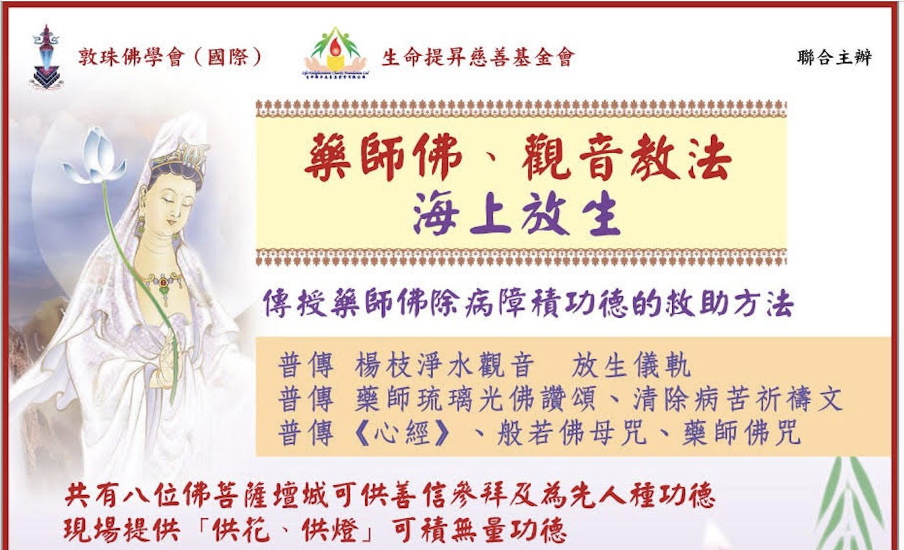

《藥師佛暨觀音教法海上放生法會》
2025年11月30日
傳授觀世音菩薩放生儀軌
絕對正確的佛教放生方法
祝願大家平安喜樂，我們誠摯地邀請您參加即將於2025年11月30日（星期日）舉辦的《藥師佛、觀音教法海上放生》活動（同時傳授觀世音菩薩放生儀軌），由《敦珠佛學會》和《生命提升慈善基金會》聯合主辦，為方便各位善信報名，今年我們更製作了網上報名表格。
線上報名表格連結
(目前只剩餘小量船票，請先電郵dudjomsupport@dudjom.com 查詢船票情況）
(如不上船僅捐款，則無需先查詢）
(需登入Google帳戶。更多報名方法在下方）
本次活動旨在踐行慈悲之心，使用絕對正確的佛教放生方法實踐利益眾生的善行，同時確保對生態環境無害，我們將：
1. 選擇適合當地生態系統的物種
2. 在專業指導下進行放生
3. 遵守相關法規
「放生」所積聚之善業功德難以估量，可以直接更改自身及家人之「善、惡」二業組合，迅速改變命運、祈福添壽、消災避劫、去除事業及生命旅途上之種種障礙、更可以迴向此等功德予已去世之親友及亡者，甚至未出生之嬰靈、與及已死去之寵物，助其超脫「三惡道」或往生「三善道」。
除放生活動，本會移喜泰賢金剛上師及啤嗎哈尊金剛上師更會傳授一系列的教法
1. 傳授「藥師佛除病障積功德的救助方法」
2. 普傳「楊枝淨水觀音 放生儀軌」
3. 普傳「藥師琉璃光佛讚頌、清除病苦祈禱文」
4. 普傳「《心經》、般若佛母咒、藥師佛咒」
現場共有八位佛菩薩壇城可供善信參拜及為先人種功德
現場提供「供花、供燈」可積無量功德
活動資料
放生日期：2025年11月30日（星期日）
放生時間：上午十一時半至下午四時正 (上午十一時十五分開始登船，十二時開船，請勿遲到)
集合地點：香港北角東渡輪客運碼頭 –「洋紫荊」號集合登船
放生捐款：並無規定，隨緣布施。
迴向功德：凡贊助放生款項$500（每位迴向功德之姓名計），均會誦讀其姓名迴向功德
（可以迴向功德予在世者或亡者）
（可以迴向功德予在世者或亡者）
船費、觀光及午饍(精美自助素食餐)費：
每位＄220 (大小同價)，因座位有限，請各位善信盡早購票，以免向隅
每位＄220 (大小同價)，因座位有限，請各位善信盡早購票，以免向隅
參加報名方法
(目前只剩餘小量船票，請先電郵dudjomsupport@dudjom.com 查詢船票情況）
(如不上船僅捐款，則無需先查詢）
報名方法2：填上參加表格並連同付費資料交回本會 （電郵／郵寄／ 傳真）
參加表格：https://bit.ly/3ZhtluX
電郵：dudjomsupport@dudjom.com
郵寄： 香港柴灣常安街77號發達中心4/F
傳真： (852) 3157-1144
參加表格：https://bit.ly/3ZhtluX
電郵：dudjomsupport@dudjom.com
郵寄： 香港柴灣常安街77號發達中心4/F
傳真： (852) 3157-1144
報名方法3：親臨本會
逢星期二至星期六上午十點半至下午五點半，可親臨本會址禮佛及請購放生船票，或者致電本會 (852) 2558-3680 查詢有關詳情。
付款及有關資料亦可電郵至：dudjomsupport@dudjom.com 查詢或者遞交
逢星期二至星期六上午十點半至下午五點半，可親臨本會址禮佛及請購放生船票，或者致電本會 (852) 2558-3680 查詢有關詳情。
付款及有關資料亦可電郵至：dudjomsupport@dudjom.com 查詢或者遞交
敦珠佛學會會址: 香港柴灣常安街77號發達中心4字樓
船飛和收據將會寄回閣下之府上。
船飛和收據將會寄回閣下之府上。
本會為政府認可之「慈善團體」， 收據可作免稅憑證。
現場禮敬諸佛菩薩的功德
1. 釋迦牟尼佛：此世間之根本本師，供養可得無量之功德與加持
2. 蓮師：可助即生脫離輪迴
3. 大白傘蓋佛母：可避一切災難凶險、出入平安、受保護
4. 咕嚕咕叻佛母：可增強人緣、姻緣
5. 綠度母：觀音菩薩的化身，所求如願
6. 文殊菩薩：可增長智慧、成績優異
7. 藥師佛：增醫緣及藥緣、除病苦
8. 長壽佛：可增福延壽
藥師佛的殊勝功德
1. 藥師佛為大醫王佛，發十二誓願，救眾生之病源，治無明之瘋疾。修持藥師佛法門咒語能消除一切病苦災業，有無邊功德。藥師佛統領十方護法神、十二藥叉大將及其下之六十太歲。因此供藥師佛可化太歲。藥師佛用「戒、定、慧」法藥，醫九界眾生之報病、業病、煩惱病，故名藥師。
佛說若人聞說及讚頌「藥師琉璃光如來本願功德經」，此人將會：1. 能開人耳目，2. 能破治人病，3. 能除人陰冥，4. 能使人光明，5. 能解人疑點，6. 能去人重病，7. 千劫萬劫永無復憂患，8. 令眾生安穩得善福。
若人至誠憶念「藥師琉璃光如來」，將獲得無量無邊之殊勝功德：1. 化解宿世怨業，2. 消除一切「生死罪障」，3. 滿願往生「淨琉璃世界」，4. 除一切苦惱，5. 獲得圓滿、吉祥、光明、希望、平安喜樂、幸福莊嚴菩薩人生，6. 淨化「心靈憂鬱、苦悶、雜煩」，7. 救度往昔無知、一切破戒、犯戒、造惡因果，8. 得光明菩薩淨妙智，9. 救度「魔怪鬼神」附身作亂，一切絞纏無明怪病。
放生的功德
《契經》云：「戒殺放生，得長壽報，… 又戒殺放生，可解怨釋結，長養悲心，潤菩提種。」
《放生功德論》有云：「若欲善趣之樂，放生能得人天福報；若欲自得寂滅，放生即得聲聞羅漢果；若以菩提心所攝，放生則成佛果之因；若願上師住世，放生即能感得上師長久住世；若欲自己長壽，放生成為殊勝長壽法；此有無等之功德。」
《藥師琉璃光如來本願功德經》云：「放諸生命…病得除癒，眾難解脫。放生修福，令度苦厄，不遭眾難。」
《中陰教言論》云：「今生「放生」，到中陰時，其所放之眾生會來到面前為您接引及指路，而往生自己所欲的淨土；若殺生，則其所殺之眾生，彼時會顯現為極為忿恨，致使自己被強力所牽引而墮入地獄之中。」
「放生」所積聚之善業功德難以估量，可以直接更改自身及家人之「善、惡」二業組合，迅速改變命運、祈福添壽、消災避劫、去除事業及生命旅途上之種種障礙、更可以迴向此等功德予已去世之親友及亡者，甚至未出生之嬰靈、與及已死去之寵物，助其超脫「三惡道」或往生「三善道」。
敦珠佛學會（國際）在YouTube的佛教教學頻道
至今為止，已經超過40.6萬多的訂閱率，而點擊率亦已超過1億多萬人次以上。這樣的情況，相信是目前全球最高訂閱率及點擊率以「華語為主」的YouTube佛法講解頻道。
現附上敦珠佛學會(國際)於YouTube上載有關放生的視頻以供善信們參考：